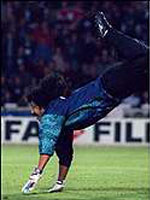

about me
 Software:
Software:
Torta
Karmack
Plata
FUmanchu!
Rants:
AboutMe
Blogging
El origen del hombre americano
Propositos2006
Propositos2007
SWFing
Pictures:
Sicilia -
thumbs
Visita Dimo 2007 -
thumbs
Tokyo -
thumbs
Barcelona -
thumbs
Lisbon -
thumbs
Gilberto Gil -
thumbs
Visita Fidel -
thumbs
Hiver -
thumbs
Dogs -
thumbs
Italy -
thumbs
Eurockeennes -
thumbs
Grenoble -
thumbs
Chipie -
thumbs
Place aux Herbes -
thumbs
Eek Friends:
 Alejo Alejo
Javier
Nelson
Old Posts:
Archive
Created with:
emacs
bash
libXSLT


 Dimo's Art
Quebec Hispano
Dimo's Art
Quebec Hispano
|
|
2005 - October |
|
Hace unos años, haber encontrado este libro on-line hubiera sido una delicia. Hoy en día no tengo el tiempo suficiente. Es una lástima que para poder programar juegos en las consolas (nintendo's, sony's, microsoft's) muchas veces la documentación sobre la plataforma sea imposible de adquirir sin pagar una millonada al fabricante.
|
|
|
Bueno, aprobaron el cambio en las reglas del juego a la mitad del camino. Como dice Cavorito, el debate debía haber sido sobre si era o no conveniente la reelección en Colombia en general, y no sobre si Uribe es buen o mal presidente. A proposito, no decian que era el colmo que Chavez hubiese reformado la constitución para poder ser re-elegido? A los uribistas me imagino que en un caso les parece bien y en el otro mal. Y los chavistas seguro piensan igual, pero con los nombres cambiados.
A proposito de Cavorito, ayer Presentacular estuvo todo el día en la lista de bookmarks populares de del.icio.us. Rock on, cavorito.
|
|

Como saben los que me conocen, el futbol me interesa muy poco. O nada. La única copa que sigo con fervor es la COFOL, ese encuentro apocaliptico entre titanes del balón y del teclado. Sin embargo, para no quedar fuera de lugar el próximo año, es necesario escoger una selección a la cual apoyar en la copa mundial. Revisemos mis opciones:
-
Francia: Siendo el país en el que vivo actualmente, parece la opción mas adecuada. En caso de victoria, se puede participar de la felicidad de la población indigena. A favor: Zidane, ese genio que volvió a la selección luego de escuchar una voz que lo conminaba a hacerlo. (mas tarde aclararía que era la voz de su hermano, por telefono). En contra: con esa nómina de viejos, no creo que se les vea jugar mas de tres partidos.
-
Tunis: Dada la gran cantidad de ciudadanos de origen tunisino en este país, también hay con quien celebrar. A favor: A diferencia de los franceses, con los tunisinos si se puede gritar en los partidos. En contra: Yo nunca he gritado durante un partido, ni pienso empezar.
-
Brasil: La selección default de los colombianos, que cada 4 años recordamos lo cercanos que somos a los brasileros. A favor: Un valor seguro. Nos podemos agarrar de la vecindad para identificarnos un poco. Además, todo el mundo quiere a los brasileros.
-
Argentina: Al igual que Brasil, un valor seguro. En contra: Nadie quiere a los argentinos. (Esto último es aplicable a los franceses tambien).
-
Ecuador: Estos si se parecen a nosotros. A favor: La bandera es casi igual a la nuestra. El entrenador es colombiano. Hatemachine es ecuatoriano. En contra: No van a durar mas de tres partidos.
-
Algún equipo exótico: Nada como ir por algo tipo Burkina-Faso para diferenciarse de las masas
|
|
|
I want the principles of a timeless muse
I want to eradicate my negative views
And get rid of those people who are always on a down
It's easy enough to tell what is wrong
but that's not what I want to hear all night long
Lou Reed - New Sensations
|
|
|

 Save this post]
Save this post]